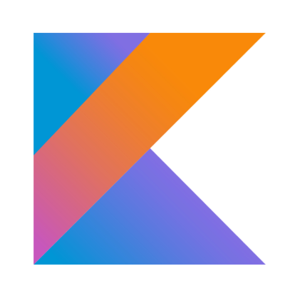
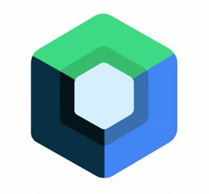
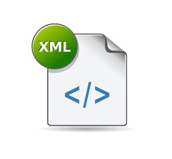
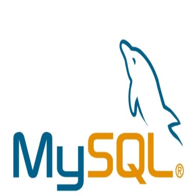
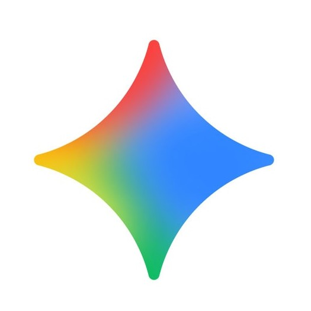
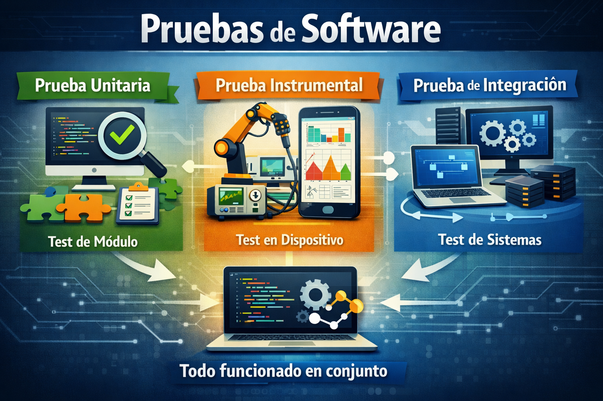

Mi nombre es Yasser Ortiz T. Soy ingeniero de sistemas con varios años de experiencia desarrollando independientemente aplicaciones móviles nativas para Android. Especialista en Kotlin y Jetpack Compose, aplico arquitecturas modernas (MVVM, Clean Architecture), DI con Hilt y pruebas unitarias e instrumentales. Complemento mi stack con Node.js y MySQL, integrando IA en mis flujos de trabajo para optimizar calidad y eficiencia.
ACERCA DE MÍ
Hoja de vida
Mis mejores proyectos

Gamificación sobre emprendimiento
- Patrón de diseño arquitectónico: MVVM + Clean Architecture
- Base de datos: MySQL
- API: Node
- Inyección de dependencias: Hilt
- Descripción: Esta app está orientada a la educación, cuenta con varios ejercicios sobre la temática de emprendimiento, tiene cuatro modelos de actividades: Verdadero y falso, Elegir respuesta correcta, Escribir respuesta correcta y Lectura comprensiva. Los ejercicios fueron creados según la estrategia de enseñanza y aprendizaje: Gamificación.

Accident Reporter
- Patrón de diseño arquitectónico: MVVM + Clean Architecture
- Base de datos: MySQL
- API: Node + Google Maps
- Inyección de dependencias: Hilt
- Descripción: Esta app le permite al usuario elegir una ubicación en el mapa para reportar algún incidente, luego de elegir una ubicación se mostrara un formulario donde debe elegir el tipo de incidente y describir el incidente, luego la app obtiene la fecha actual en su dispositivo y guarda el reporte en una base de datos.
Conocimientos técnicos

Kotlin
Jetpack Compose
XML
MySQL Node
Node
Herramientas de desarrollo

Gemini Android Studio
Android Studio
Visual Studio Code
 MySQL Workbench
MySQL Workbench
GitHub
Pruebas y Automatización

Pruebas de software
- Pruebas unitarias: Cobertura de lógica de negocio en Kotlin.
- Pruebas instrumentales: Validación de UI con Espresso y Mock.
- Pruebas de integración: Flujo completo entre API Node.js y base de datos MySQL.
Automatización con IA
- IA: Uso de Gemini para generación de UI/UX y resolución de bugs.
- MCP: Implementación de Model Context Protocol en modo local para proporcionar contexto adicional al IDE.
- AGENTS: Configuración y mantenimiento del archivo AGENTS.md para definir agentes con reglas, políticas y contexto específico del proyecto.
Habilidades blandas
Proactividad
Comunicación
Adaptabilidad
Capacidad resolutiva